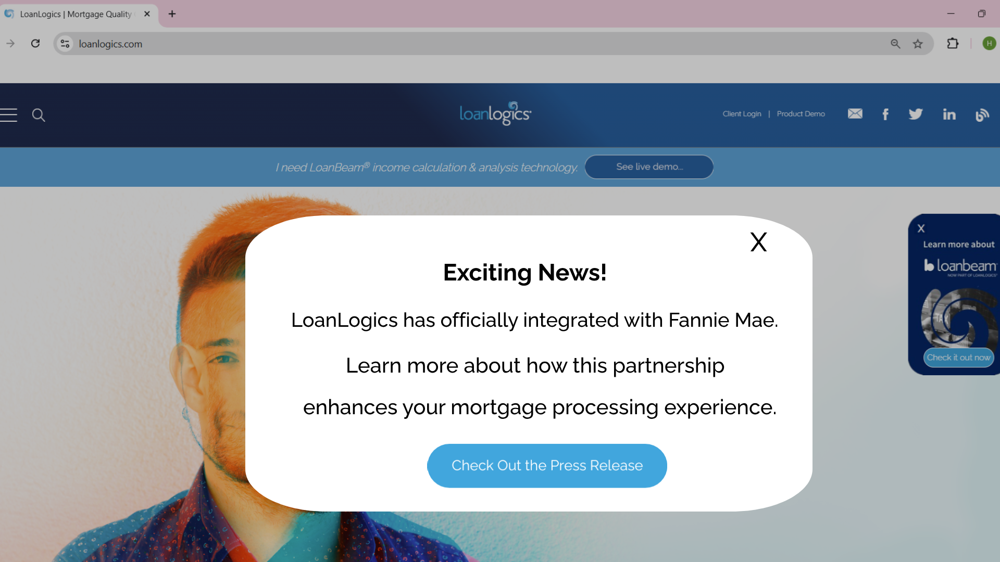
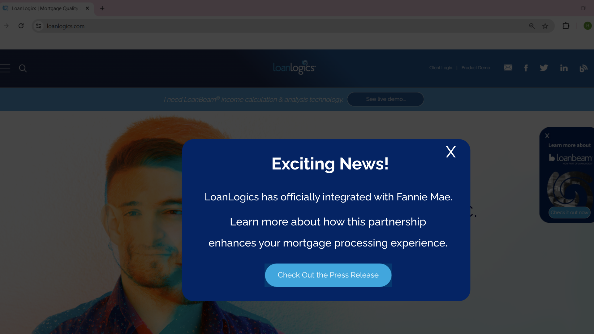
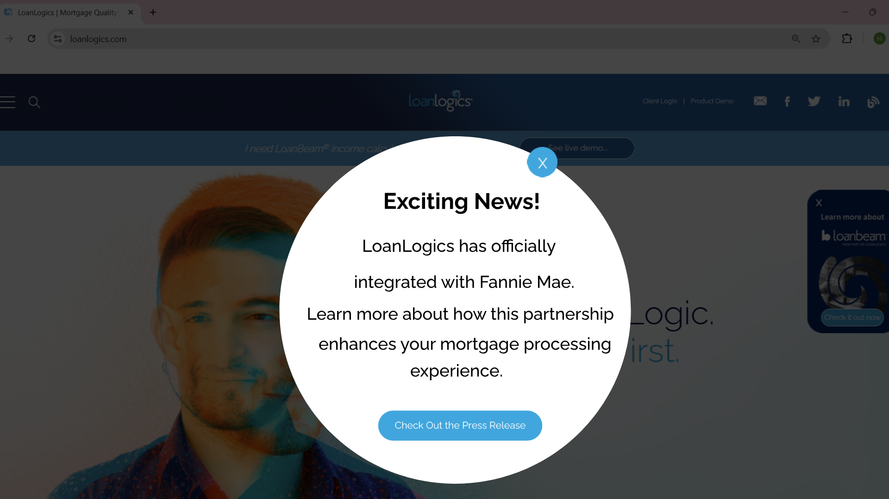

LoanLogics — Enterprise Marketing System Redesign
Redesigning a scalable enterprise marketing experience to improve content clarity, strengthen conversion paths, establish reusable design patterns, and support consistent experiences across 20+ pages.
01 — Product Overview
Product Context
LoanLogics operates in the FinTech and mortgage automation space, with LoanBeam® positioned as an income calculation automation solution for lenders.
The Opportunity
The existing marketing experience needed stronger consistency, clearer messaging, and more visible conversion paths across the website.
Design Objective
Create a scalable experience that communicates product value clearly while supporting consistent page creation across a growing marketing ecosystem.
02 — Business & User Goals
The redesign needed to connect business objectives such as lead generation and brand alignment with user needs around clarity, navigation, and understanding product value.
Lead Generation
Improve visibility and accessibility of demo-request pathways.
Clarity
Make product messaging easier to scan and understand.
Brand Alignment
Create stronger visual consistency across LoanLogics and LoanBeam experiences.
Scalability
Establish reusable page structures and UI patterns.
Consistency
Support responsive and consistent experiences across multiple pages.
03 — The Product Problem
The existing marketing experience was functional but lacked a consistent information hierarchy and clear conversion structure. High content density made product value harder to scan, while inconsistent layouts made pages feel disconnected from the overall brand experience.
Key challenges:
- No unified layout and content structure across pages.
- Product benefits were buried within large content blocks.
- Request Demo CTAs lacked sufficient visibility.
- Pages lacked consistent visual and brand patterns.
- The existing structure was difficult to scale efficiently across new marketing pages.
04 — Research & Discovery
The discovery phase focused on understanding the existing experience, business priorities, content structure, competitive patterns, and stakeholder expectations before defining the redesigned system.
Stakeholder Alignment
Collaborated with Product, Marketing leadership, and Engineering to understand business objectives, content requirements, implementation considerations, and enterprise expectations.
- Product requirements
- Marketing objectives
- Brand expectations
- Technical constraints
- Implementation considerations
Competitive Analysis
Reviewed enterprise marketing experiences to identify patterns that improve information scanning, product communication, trust, and conversion visibility.
- Hero messaging patterns
- CTA hierarchy
- Benefit presentation
- Trust indicators
- Content hierarchy
Content Audit
Reviewed existing content and reorganized information into more scannable sections while identifying reusable structures that could be applied across multiple pages.
Design Opportunity
The research pointed toward a modular marketing system rather than treating each page as an independent design problem.
05 — User Journey & Content Structure
I mapped the marketing journey to understand how users could move from initial product discovery toward understanding value and taking a conversion action.

Design focus: Reduce the gap between product discovery, understanding product benefits, building trust, and reaching the appropriate conversion action.
06 — Information Architecture
I structured the experience around a reusable page framework so users could consistently find product value, supporting information, trust signals, and conversion actions.
The structure was designed to remain flexible enough for different product pages while maintaining consistent information hierarchy and interaction patterns.
07 — End-to-End Design Process
Understand
Stakeholder alignment, content audit, competitive analysis, and existing experience review.
Structure
Problem framing, user journey, information architecture, content hierarchy, and conversion goals.
Explore
Wireframes, visual exploration, CTA alternatives, responsive layouts, and reusable UI patterns.
Validate & Implement
Stakeholder validation, developer collaboration, design handoff, and responsive implementation support.
08 — Wireframes & Early Exploration
Early sketches were used to explore page hierarchy, content grouping, CTA placement, and responsive layout direction before moving into high-fidelity design.

Early page structure and content hierarchy exploration

Page layout and responsive content exploration
09 — High-Fidelity Product Experience
The following screens are recreated versions of the original designs I worked on. The current live website has since been redesigned.

Product messaging and value proposition

Feature and benefits presentation

Product navigation and supporting content
10 — CTA Exploration & Stakeholder Validation
Because the Request Demo CTA was a key conversion point, I explored multiple visual directions and presented the alternatives to leadership for review.

Concept 1

Concept 2 — Selected by VP

Concept 3
The selected direction was chosen through stakeholder review and was subsequently used for implementation.
11 — Key Design Decisions
Scannable Content Hierarchy
Design ChoiceReorganized dense content into structured sections, benefit groups, and feature blocks.
WhyUsers needed to understand product value without navigating through large undifferentiated text blocks.
Stronger CTA Hierarchy
Design ChoiceIncreased the visual prominence and consistency of conversion actions across the experience.
WhyDemo requests were an important business objective and needed clearer visibility within the page hierarchy.
Reusable Page Modules
Design ChoiceCreated reusable structures that could be adapted across multiple marketing pages.
WhyA reusable system reduced the need to design every page from scratch and improved consistency.
Responsive Structure
Design ChoiceMaintained consistent information hierarchy while adapting layouts for different viewport sizes.
WhyThe system needed to provide a consistent experience across responsive breakpoints.
12 — Design Trade-offs
The redesign involved balancing business conversion objectives, content requirements, visual consistency, and scalability.
Content Depth vs. Scannability
Enterprise marketing pages required sufficient product information, but displaying everything with equal visual weight increased cognitive load. Content was therefore grouped into clearer sections with stronger hierarchy.
CTA Visibility vs. Visual Balance
Increasing CTA prominence could make the page feel overly conversion-focused. Multiple visual directions were explored to find a balance between discoverability and overall page hierarchy.
Reusable System vs. Page Flexibility
Standardizing every page could restrict content flexibility. The solution therefore used reusable structures that could be adapted to different marketing content.
Brand Consistency vs. Product Differentiation
The experience needed to align with the broader LoanLogics brand while still allowing individual product content to communicate its own value proposition.
13 — Reusable Design System & Components
A reusable design approach was established to support consistency across 20+ marketing pages and make future page creation more efficient.
Grid & Layout
Consistent page widths, spacing, grids, and responsive layout structures.
Typography Hierarchy
Standardized heading, body, supporting text, and content hierarchy patterns.
CTA Patterns
Reusable primary and secondary conversion patterns with consistent visual treatment.
Content Modules
Reusable hero, benefits, feature, supporting-content, and CTA sections.
Responsive Patterns
Consistent behavior across desktop and smaller responsive breakpoints.
Brand Alignment
Reusable visual patterns supporting a consistent LoanLogics and LoanBeam experience.
14 — Cross-functional Collaboration
The redesign was developed collaboratively with Product, Marketing, Development, and QA to balance business goals, content requirements, design quality, and implementation feasibility.
Collaborated With
- Product Team
- Marketing Leadership
- Engineering / Development
- QA
Key Activities
- Requirement discussions
- Design reviews
- Stakeholder presentations
- CTA direction review
- Developer handoff
- Responsive implementation validation
15 — Validation & Iteration
Informal validation sessions were conducted with Marketing, Sales, and subject-matter experts to review the redesigned experience and identify areas requiring refinement.
Key refinements included:
- Improved CTA visibility.
- Refined header spacing and hierarchy.
- Enhanced banner imagery and visual engagement.
- Refined page structure for clearer content scanning.
16 — Outcomes & Measurable Impact
The redesign created a more scalable marketing experience while improving consistency and reducing the effort required to create new pages.
20+
Marketing pages standardized using the redesigned structure and reusable patterns.
30–40%
Faster page creation through reusable design structures and components.
- Established a scalable page and component structure across the marketing experience.
- Improved content hierarchy and product messaging clarity.
- Strengthened conversion-path visibility through clearer CTA placement.
- Improved consistency across LoanLogics and LoanBeam marketing experiences.
- Supported more efficient marketing deployment through reusable design patterns.
17 — My Role & Ownership
I contributed across the end-to-end design lifecycle, from understanding business and content requirements through information architecture, visual design, stakeholder validation, and design-to-development collaboration.
Discover
- Stakeholder discussions
- Content audit
- Competitive analysis
Define
- Information architecture
- User journey
- Content hierarchy
Design
- Wireframes
- High-fidelity UI
- CTA exploration
- Responsive layouts
Deliver
- Stakeholder presentations
- Developer handoff
- Design QA
- Frontend collaboration